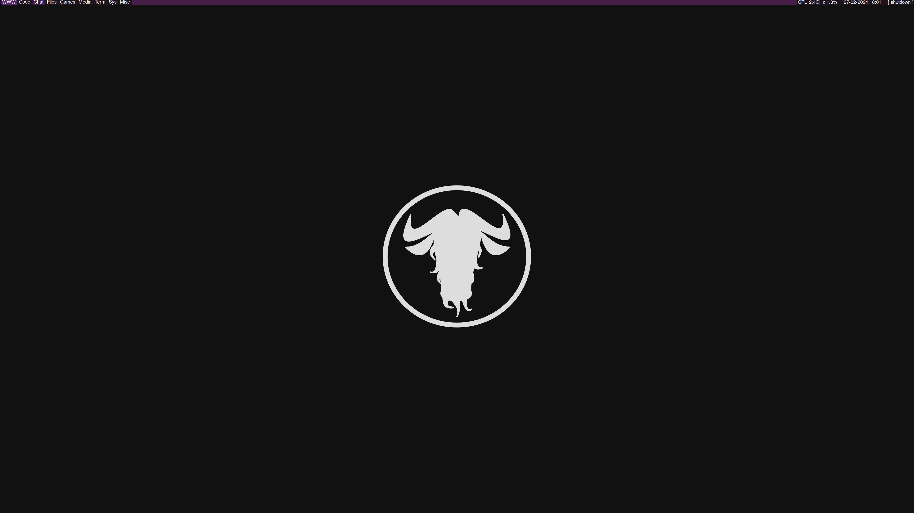

Qtile is a desktop enviroment wrote in python. If you know anything about programming and the programming
world you might be thinking well isent python slow? Well it is but in this case it is extreamly fun because
Python is a very felable and easy language to learn and if you see my gitlab you can tell I really like
chaning my Qtile config. This is due to change of taste over time like when I started with Qtile I did not
have gaps inbetween windwos but I do now, I also have everything colour coded to my liking (Magenta)
Here is my Desktop!

GITLAB https://gitlab.com/Shipwreckt/Qtile-conf/-/blob/main/config.py?ref_type=heads